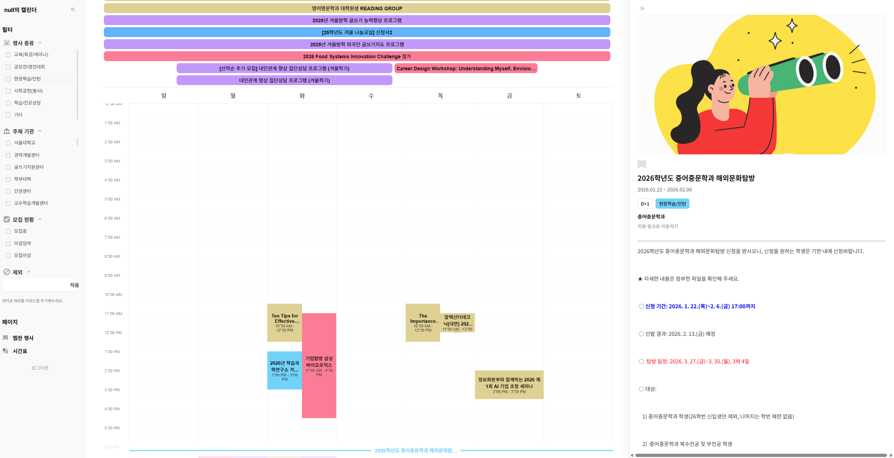
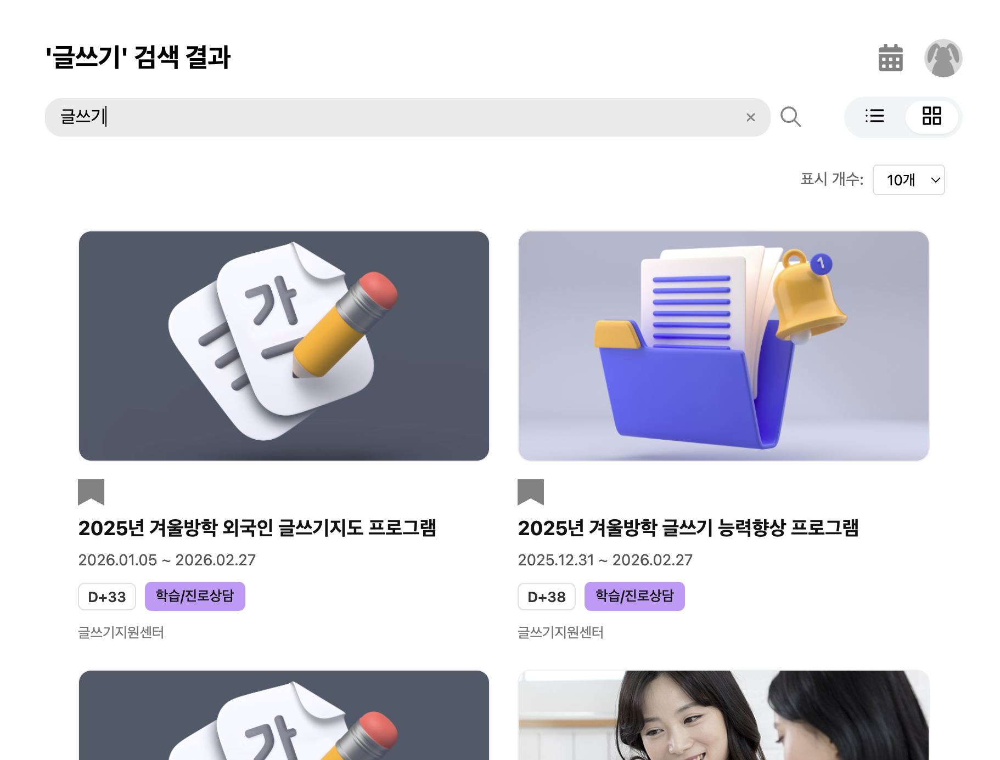

Project Overview
Hangsha is a campus event calendar service built to improve access to extracurricular event information at Seoul National University. The project started from the poor usability of the university's existing extracurricular platform and aimed to provide a more intuitive and personalized experience through calendar views, filtering, bookmarks, timetable support, and memo features.
I mainly worked on backend development and data scraping, focusing on how event data could be collected from an unstable external source, normalized, and served in a product-ready form for frontend features and personalization.
What I Did
- Built backend flows for collecting, normalizing, and serving campus event data.
- Implemented event-related APIs including calendar views, search, event detail, and category/group lookup.
- Worked on personalizing backend features such as bookmarks, excluded keywords, memos, and tags.
- Handled source-specific collection logic for both list pages and detail pages using a mixed strategy with OkHttp and Playwright.
Design Challenge
The core challenge in Hangsha was not just collecting event data, but building a backend that could serve stable product features on top of an unstable external source. Since the original platform mixed static pages, browser-dependent flows, and inconsistent access patterns, the backend had to absorb that variability before the data could be used reliably in calendar, search, and personalization features.
I approached this by separating data acquisition from product-facing delivery: using different collection strategies where needed, normalizing the results into a consistent event model, and exposing them through APIs designed for filtering, calendar views, and user-specific responses. This made the system closer to a service-oriented data pipeline than a simple crawler plus CRUD backend.
Preview


Screens from the calendar-based event browsing experience, designed to make event discovery, filtering, and personalized access easier than the original university platform.